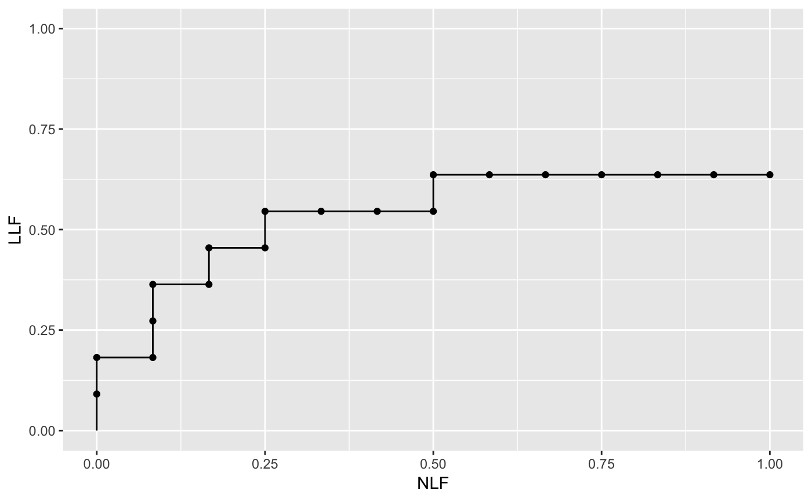

SimulateFrocDataset.RdSimulates an uncorrelated MRMC FROC dataset for specified numbers of readers and treatments
SimulateFrocDataset(mu, lambda, nu, zeta1, I, J, K1, K2, lesionNum)
| mu | The intrinsic mu parameter of the RSM |
|---|---|
| lambda | The intrinsic lambda parameter of the RSM (not the physical parameter) |
| nu | The intrinsic nu parameter of the RSM (not the physical parameter) |
| zeta1 | The lowest reporting threshold |
| I | The number of treatments |
| J | The number of readers |
| K1 | The number of non-diseased cases |
| K2 | The number of diseased cases |
| lesionNum | A K2 length array containing the numbers of lesions per diseased case |
The return value is an FROC dataset.
See book chapters on the Radiological Search Model (RSM) for details. In this code correlations between ratings on the same case are assumed to be zero.
Chakraborty DP (2017) Observer Performance Methods for Diagnostic Imaging - Foundations, Modeling, and Applications with R-Based Examples, CRC Press, Boca Raton, FL. https://www.crcpress.com/Observer-Performance-Methods-for-Diagnostic-Imaging-Foundations-Modeling/Chakraborty/p/book/9781482214840
set.seed(1) K1 <- 5;K2 <- 7; maxLL <- 2;lesionNum <- floor(runif(K2, 1, maxLL + 1)) mu <- 1;lambda <- 1;nu <- 1 ;zeta1 <- -1 I <- 2; J <- 5 frocDataRaw <- SimulateFrocDataset( mu = mu, lambda = lambda, nu = nu, zeta1 = zeta1, I = I, J = J, K1 = K1, K2 = K2, lesionNum = lesionNum ) ## plot the data ret <- PlotEmpiricalOperatingCharacteristics(frocDataRaw, trts= 1, rdrs = 1, opChType = "FROC") print(ret$Plot)